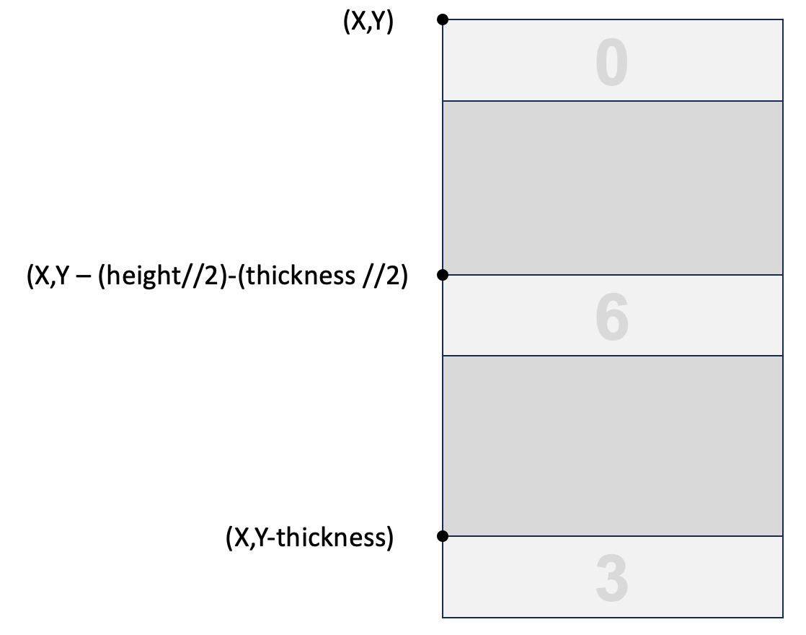
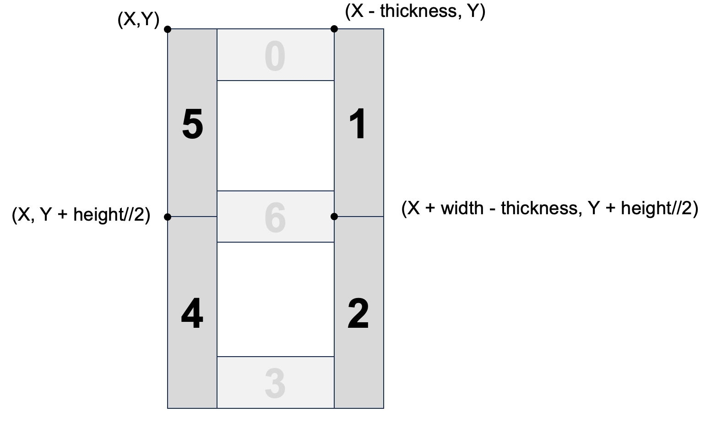

Creating Digit Functions
In the last section, we drew a seven-segment digit number using the line function. In this section, we will build a better function that will add a flexible new parameter for the thickness of the digit segments. We will then test the function under a variety of conditions and see how we can make the function easier to use.
New Thickness Parameters
Placing the rectangles correctly within a seven-segment display when we have many drawing parameters requires some precision. We will use a decomposition process and take "one step at a time" to work out the details.

Draw Segment Function
Here is our revised parameters list:
- The digit to display - an integer in the range 0-9
- x of the upper left corner
- y of the upper left corner
- the width of the digit (about 20 is a good value)
- the height of the digit
- (NEW) the thickness of each segment (3 or 4 are good values)
- the color (0=black, 1=white)
Here is our revised function for drawing a single digit with the segment thickness added.
1 2 3 4 5 6 7 8 9 10 11 12 13 14 15 16 17 18 19 20 21 22 23 24 25 26 27 28 29 30 31 32 33 34 35 36 | |
Let's now take a look at how we had to modify our code.
The first item to note is that when we calculate a starting point to draw, we can't just draw at the edge of the region. We need to back off our initial drawing point by the width of the segment.
Here is an example of subtracting the thickness from y when we draw the bottom segment:
1 | |

Full Test Program
1 2 3 4 5 6 7 8 9 10 11 12 13 14 15 16 17 18 19 20 21 22 23 24 25 26 27 28 29 30 31 32 33 34 35 36 37 38 39 40 41 42 43 44 45 46 47 48 49 50 51 52 53 54 55 56 57 58 59 60 61 62 63 64 65 66 67 68 69 70 71 72 73 74 75 76 77 78 79 80 81 82 83 84 85 86 87 88 89 90 91 | |